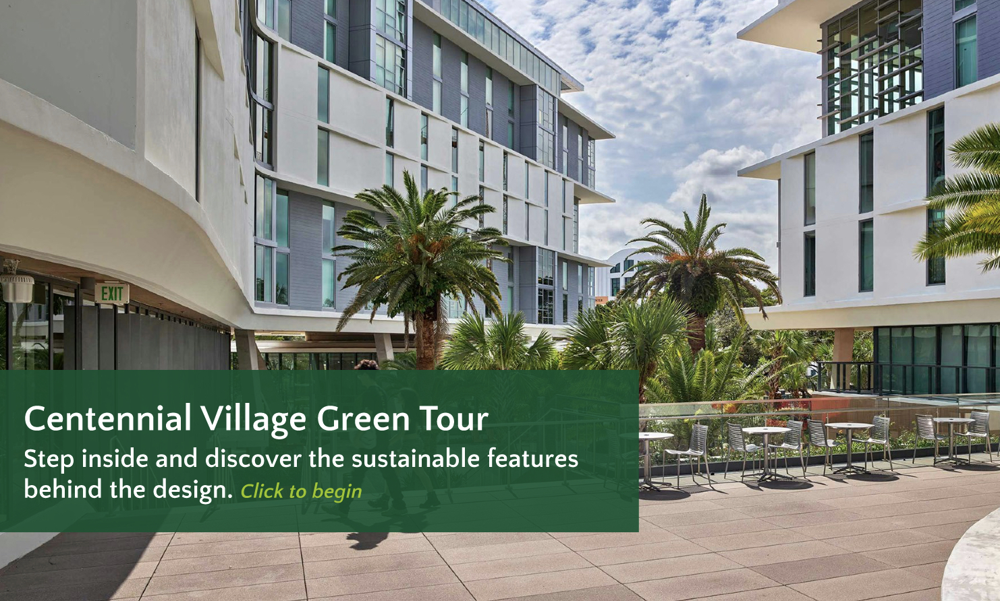

A Website That Couldn't Communicate Its Own Purpose
The University of Miami's Green Buildings page exists to inform and educate readers about LEED certification and campus sustainability. It struggled to accomplish this due to a complete lack of a consistent design system.
Inconsistent UI elements, varying visual styles across pages, and dysfunctional formatting created an overwhelming environment for every intended audience — from students to investors — leading to serious usability and engagement challenges.

4 Core Issues Discovered
After auditing all pages in scope — Green Buildings Overview, Green Building Policy, Building Sustainability Dashboard, Miami Herbert Business School LEED O+M, LEED Certified Buildings, and Phillip & Patricia Frost School of Music — four systemic problems emerged.
Inconsistent UI & UX
Each building's webpage follows different visual styles and layouts, creating a fragmented experience. Some subheadings are bold, others are not — no unified system exists.
Repetitive Content
The same information appears across multiple pages, raising navigation concerns and making it harder for users to find what they need.
Accessibility Concerns
The site does not fully adhere to WCAG accessibility guidelines, making it challenging for all users — especially those with disabilities — to access information.
Scalability Challenges
As new LEED-certified buildings are added, the lack of a structured design system creates complications when aggregating new information at scale.
Who We Designed For
The redesign had to serve four distinct audiences simultaneously — each with different needs from the same platform.
Investors & Sponsors
Need clear LEED certification data, sustainability goals, and financial impact metrics.
Faculty & Staff
Seeking green policies, initiative guidelines, and participation opportunities.
Current & Prospective Students
Want interactive elements, impact visualization, and ways to get actively involved.
Parents of Students
Need easy navigation and high-level sustainability highlights without deep technical dives.
Learning From the Best
Four competitor universities were analyzed to identify best practices in sustainability web design and extract what made their approaches successful.
Univ. of Michigan
Filterable card grid for LEED buildings — intuitive discoverability with multiple link options per project and strong visual hierarchy.
Univ. of Pennsylvania
Best overall UX/UI example — minimal nav, ADA-compliant alt text, responsive design, and well-structured interactive tabs.
Johns Hopkins
Bold header, engaging b-roll video, and a strong CTA to direct users — keeps engagement high immediately on landing.
MIT
Strong visual hierarchy: bold heading + brief intro + photo-row layout for LEED buildings. Easy to follow despite modest visual design.
How We Approached It
Scope & Audit
Defined the 6 pages in scope and conducted a full site audit to catalog inconsistencies, broken elements, and UX failures across each page.
Audience
Mapped the four target audiences to their needs, then researched industry trends: minimalism, earthy palettes, microinteractions, and data visualization.
Benchmark Analysis
Analyzed UMich, UPenn, Johns Hopkins, and MIT sustainability pages to extract proven practices in layout, navigation, and accessibility.
Figma Prototyping
Built the full redesign in Figma — designing unified nav, content cards, CTA components, and the Centennial Village virtual tour.
What We Proposed
Unified Design System
Establish consistent UI elements, typography, and color across all GreenU pages for a cohesive brand experience.
Cards Over Accordions
Replace accordion layouts with clickable building cards featuring preview images for faster information discovery.
WCAG Accessibility
Font size controls, high-contrast mode, keyboard navigation, and proper alt text across all pages.
Interactive Dashboard
Make the sustainability dashboard fullscreen-capable with clear data visualization and reduced surrounding clutter.
Mobile-First Design
Ensure all redesigned pages are fully responsive and ADA-compliant across all screen sizes and devices.
Scalable Templates
Standardized page templates so future LEED-certified buildings can be added with minimal design effort.
The Redesign, Live in the Browser
The full Figma prototype brings all redesign recommendations to life — unified navigation, content card layouts, accessible color system, and a cohesive brand identity. Click through it live below, or hit "Open Full" to go fullscreen.
Centennial Village — Immersive Walkthrough
As part of the redesign, I built an immersive virtual tour of the University of Miami's new Centennial Village dorms in Figma. Click through the embed below to explore it live — or hit "Open Full" to experience it fullscreen.
What I Built
What We Overcame
No Design System Existed
Every page used different fonts, colors, and layouts — there was no shared foundation to build from, making consistency nearly impossible.
Built One From Scratch
We established a unified design system in Figma with reusable components, a defined type scale, and UM-compliant color tokens applied across all pages.
Information Overload
Several pages buried critical content inside accordions, walls of text, or poorly labeled sections — users couldn't find what they needed.
Content Hierarchy Redesign
We restructured content using visual hierarchy principles, content cards, and clear CTAs — surfacing the most important information immediately on page load.
Serving Four Audiences
Investors, faculty, students, and parents all had fundamentally different needs from the same website with no way to filter or personalize their view.
Universal Clarity
Designed for scannability first — bold headers, summary cards, and progressive disclosure let each audience quickly find what's relevant to them.
What We Delivered
The project delivered a complete, fully interactive Figma prototype of the redesigned GreenU website alongside an immersive virtual tour of Centennial Village — driven by research, benchmark analysis, and iterative design thinking.
Explore the Prototype
The full redesign is live in Figma — click through the interactive prototype yourself.